My name is Rui Sun (Rui is pronounced as Ray). I am a third-year CS PhD student at UCLA NLP advised by Prof. Kai-Wei Chang. My experience and research topics can be found in Experience section.
Recently, I have been mainly working on the full stack of multimodal agents: benchmark [Embodied Web Agents], agent harness design [OpenVLHarness], data generation and trajectory synthesis, then SFT and RL training [UniSearcher, ARMAP], and inference-time improvement [ToolSmith, ARMAP, WorldMind]. My work covers domains including multimodal search agent [OpenVLHarness, UniSearcher, ToolSmith], agentic text-to-image generation [UniSearcher], and computer use & embodied agents [Embodied Web Agents, WorldMind, ARMAP].
Eariler, I worked on general vision language understanding and visual commonsense reasoning [IdealGPT, GENOME, UniFine, JourneyBench, Visual Commonsense Grounding]. You can find more below.
[GitHub]
[LinkedIn]
[Twitter]
[Email] (Please contact me via UCLA email address; I seldom check previous Columbia email)
I am actively looking for Research Intern opportunities in 2027. If you believe I can be a good fit, please Email me to let me know. Thanks~
If you would like to know more about me, you could view the source code of this webpage for more information. (Right-click the page and select View Page Source)
Last Update: 10/15/2026
News
OpenVLHarness is released. Welcome to try it out! [Webpage]
Recognized as CVPR 2026 Outstanding Reviewer (Top 5%)
UniSearcher: Learning to Search, Understand, and Generate with one Unified Visual Tool Use Agent
To be released; Available upon request
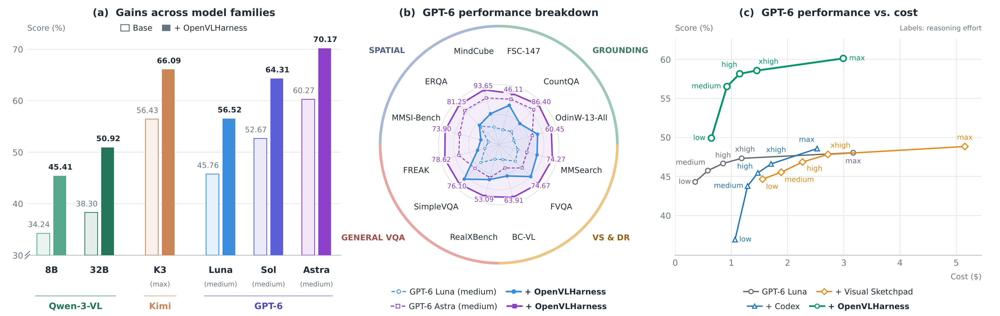
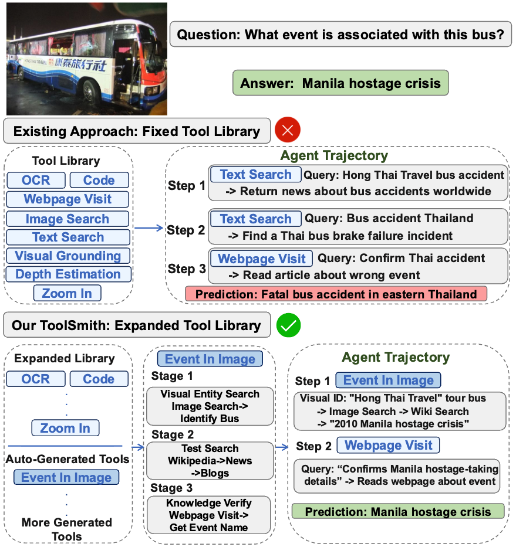
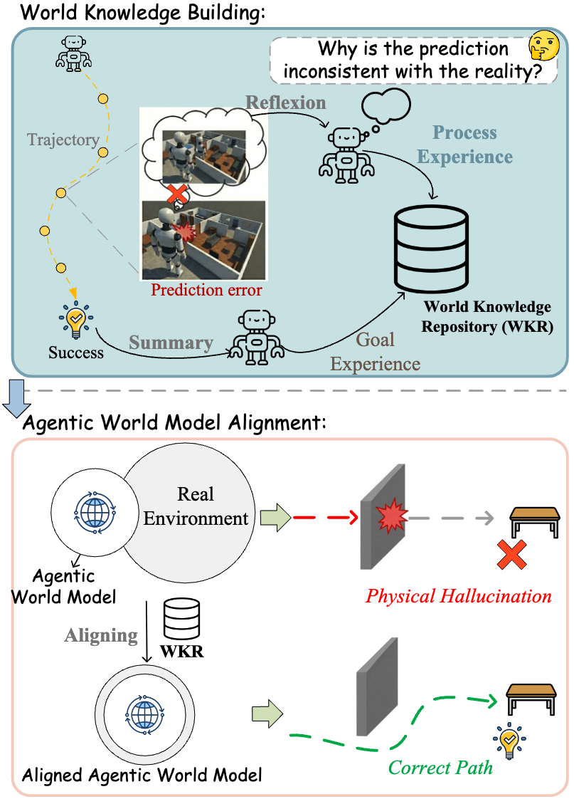
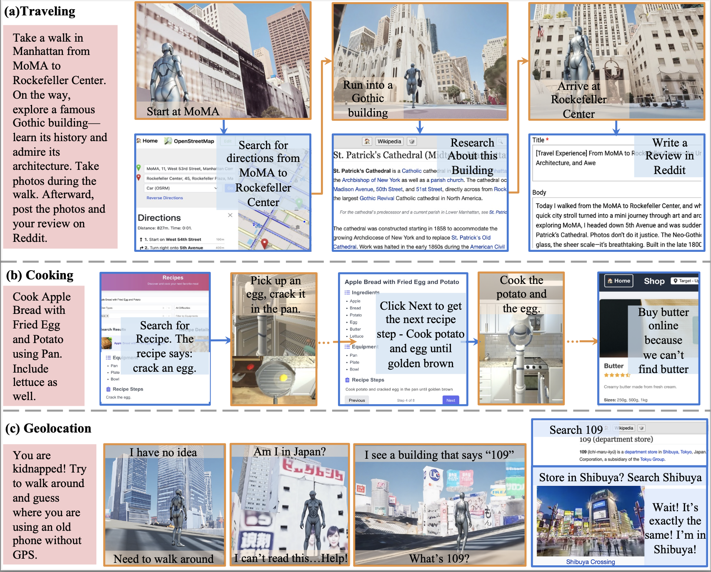
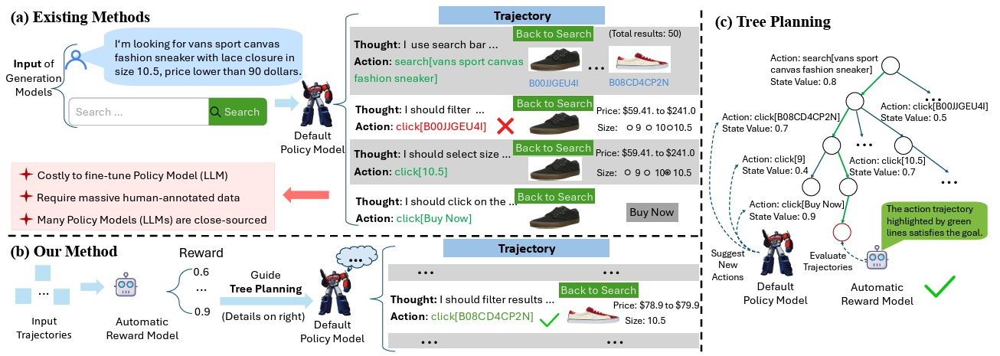
 ]
[Project Page][Code] [Twitter]
]
[Project Page][Code] [Twitter]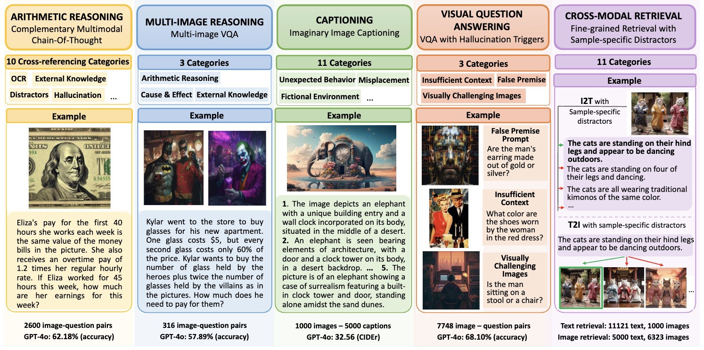
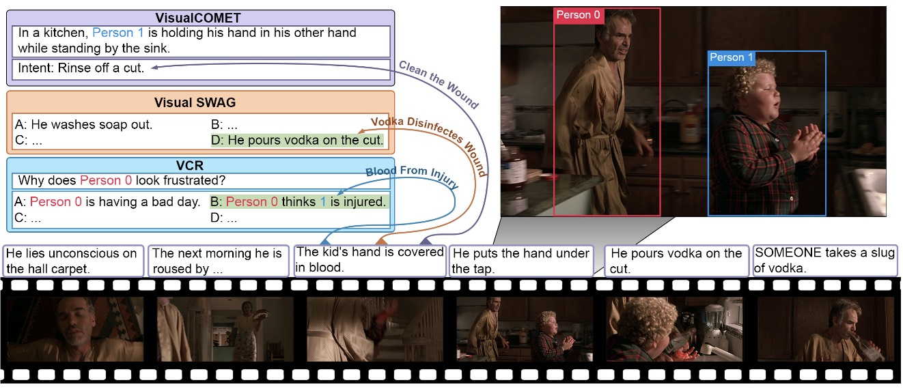
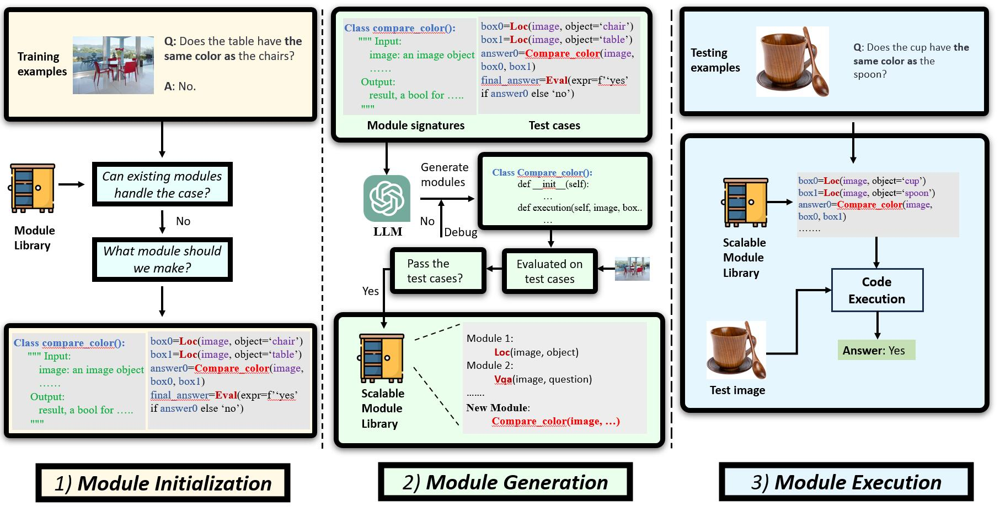
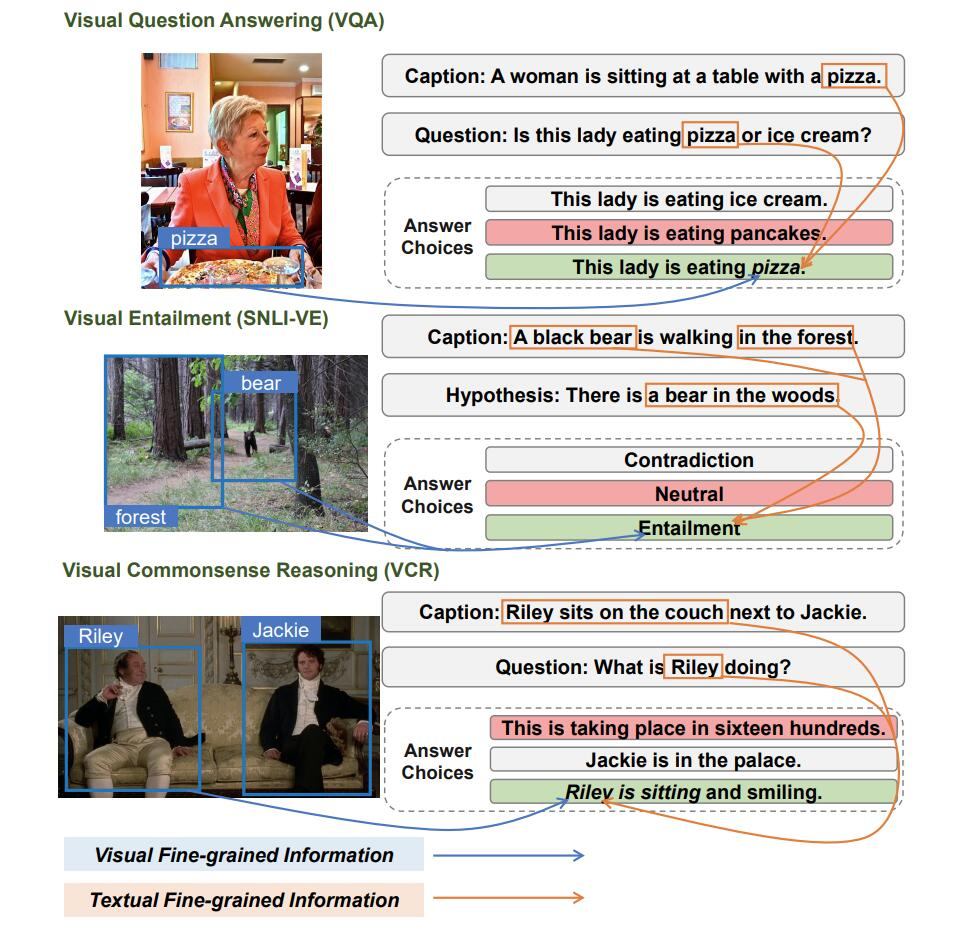
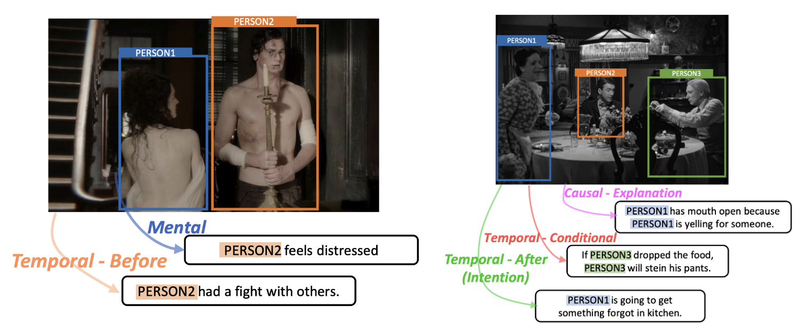
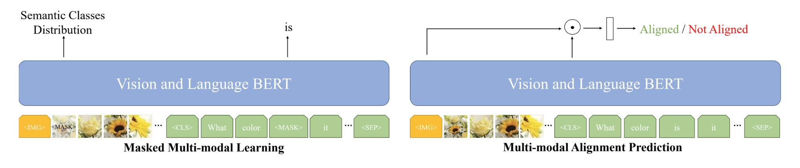
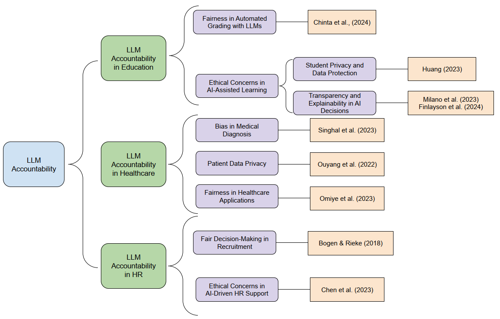
UCLA NLP, Research Assistant
Advisor: Prof. Kai-Wei Chang, Sep 2024 -- Present
Embodied Web Agent (Mentor: Dr. Yining Hong) (NeurIPS 2025 Datasets and Benchmarks Track (Spotlight))
Agent Topology (COLM 2026)
Agent Memory Use (Under Review)
Embodied Agent Experience Learning (Findings of EMNLP 2026)
Video Understanding Analysis (NeurIPS 2026)
More are on the way...
Apple Foundation Model (AFM) Team (Apple AI/ML), Research Funding Collaboration and Research Intern
Mentor & Manager: Dr. Ruiyi Zhang, Dr. Tian Cao, Dr. Zhen Yang, Dr. Zhe Gan
Dec 2025 - Jun 2026, Jun 2026 -- Present
Multimodal Harness Design (Under Review)
Agentic Unified Model (To be released)
AWS GenAI, Research Funding Collaboration
Mentor: Dr. Md Mofijul Islam, Oct 2025 -- Jun 2026
Multimodal Search Agent (Findings of EMNLP 2026, will be released)
Microsoft Research, Redmond (Deep Learning Group), Research Intern
Mentor & Manager: Dr. Hao Cheng, Dr. Jianfeng Gao, Jun 2025 -- Sep 2025
Memory Use for Computer Use Agent
MIT-IBM Watson AI Lab, Research Assistant
Mentor & Advisor: Dr. Zhenfang Chen, Prof. Chuang Gan, Jun 2023 -- Oct 2024
Inference Time Scaling for Language Agent with Monte Carlo Tree Search (ICLR 2025)
Neuro-Symbolic Visual Reasoning (ICLR 2024)
Digital Video and Multimedia (DVMM) Lab, Columbia University, Research Assistant
Mentor & Advisor: Dr. Haoxuan You, Prof. Long Chen, Prof. Shih-Fu Chang, Oct 2021 -- Jun 2023, Oct 2023 -- Jun 2024
Vision and Language Understanding Evaluation (NeurIPS 2024 Datasets and Benchmarks Track)
Vision Language Models Hallucination Mitigation (ACM MM 2024)
Large Language Model Aided Visual Reasoning (Findings of EMNLP 2023)
Zero-shot Vision-Language Understanding (Findings of ACL 2023)
Human-centric Visual Commonsense Grounding Dataset (Findings of EMNLP 2022)
Task-oriented Pretraining (Second-stage Pretraining) of Vision-Language Pretrained Models (Technical Report)
Columbia NLP, Research Assistant
Advisor: Prof. Zhou Yu, Sep 2023 -- Mar 2024
Fine-grained and Explainable Visual Categorization (More details can be found in this paper)
Rehab Engineering Alliance & Center Transforming Low Vision, NYU Langone Health, Research Assistant
Advisor: Prof. JohnRoss Rizzo, Prof. Zhou Yu, Jun 2023 -- Aug 2023
AI for Social Good: Deploy Vision-Language & Large Language Models in wearable devices for Blindness and Low Vision People (More details can be found in this page)
Intelligent Information Processing (IIP) Lab, Xidian University, Research Assistant
Advisor: Prof. Nannan Wang, Sep 2020 -- Jul 2021
Human Face Frontalization and Hallucination (More details can be found here)
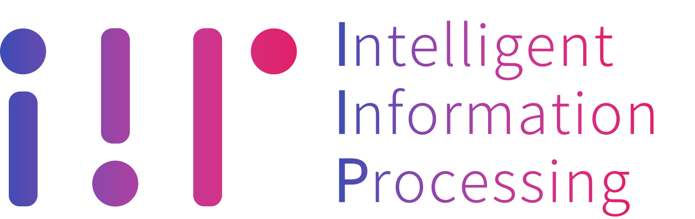
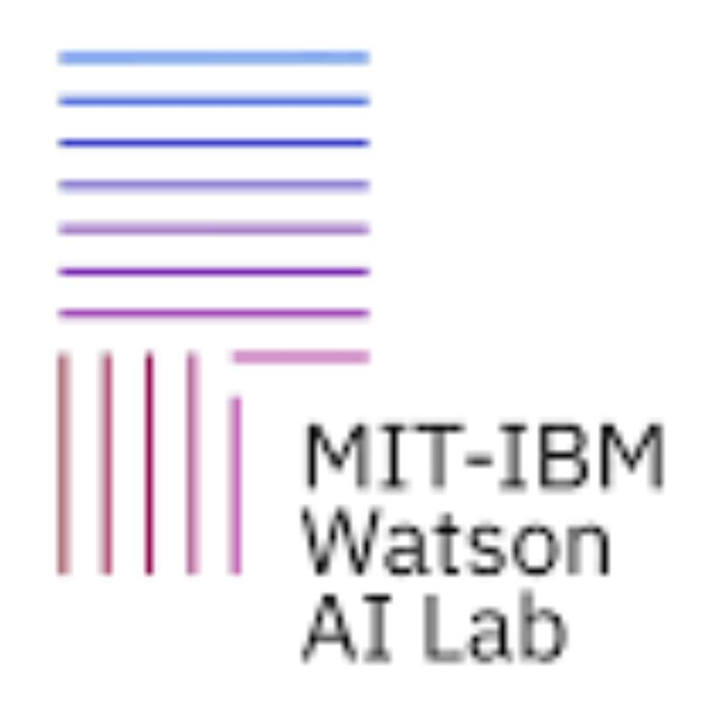
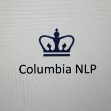
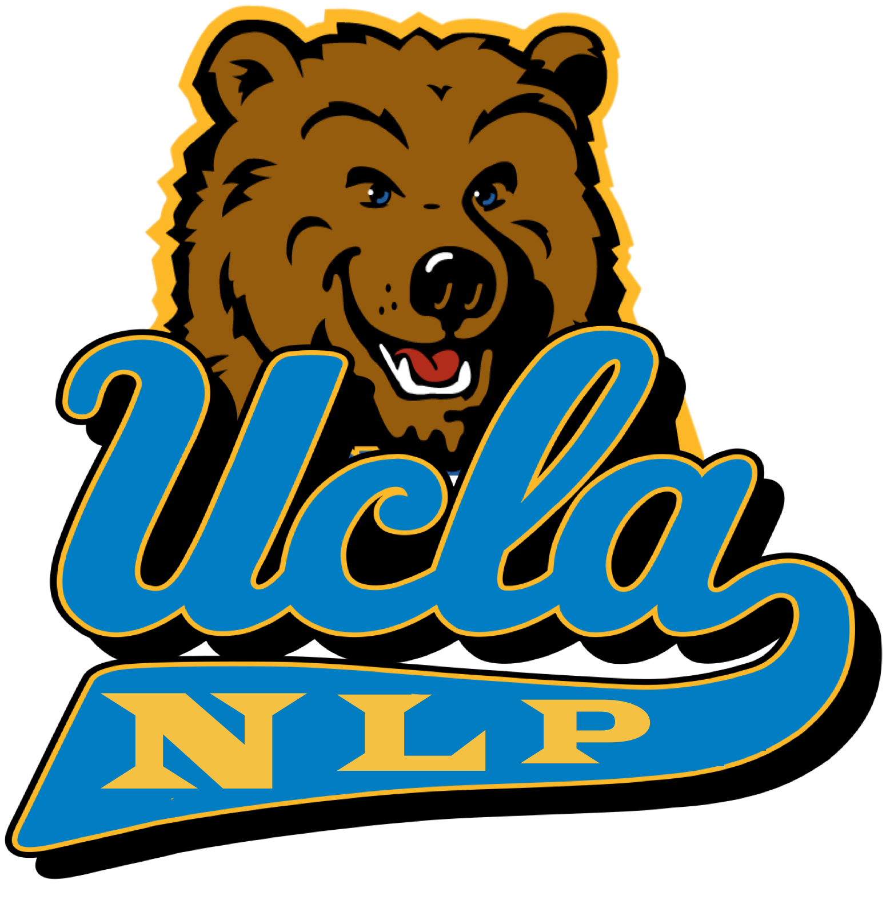
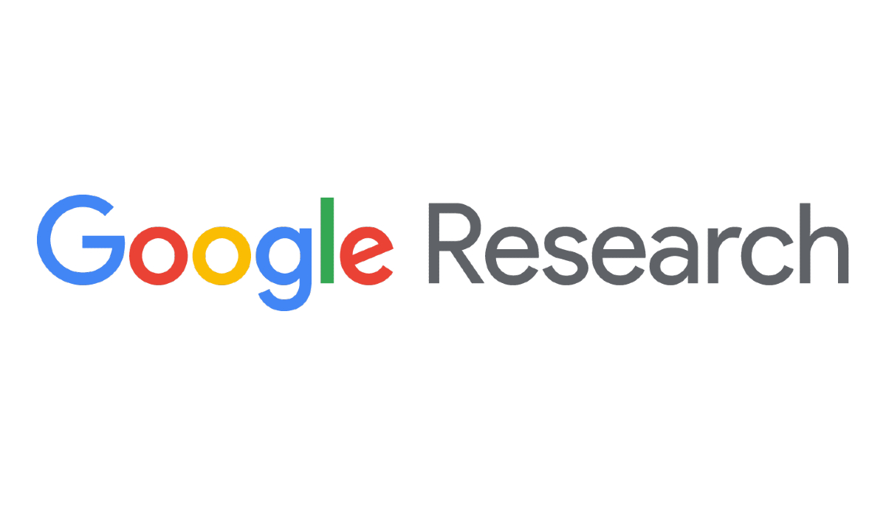
CVPR 2026 Outstanding Reviewer (Top 5%)
Research fund from Amazon Science Hub (with Prof. Kai-Wei Chang), 2025
Research fund from Google Research Scholar Program (with Prof. Chris Thomas), 2025
Interdisciplinary Contest in Modeling (ICM), Meritorious Winner, 2018
Invited Talk
Embodied Web Agents: Bridging Physical-Digital Realms for Integrated Agent Intelligence (Invited Talk at USC ISI Natural Language Group), Feb 2026
Reviewer
NLP: EMNLP, EACL, NAACL, ACL Rolling Review (ARR), ACL
AI: AAAI
Multimedia: ACM MM
ML: ICLR, NeurIPS Dataset & Benchmark Track, NeurIPS Postion Paper Track, NeurIPS
Computer Vision: CVPR, ECCV
Journal: JAIR, JMLR
Workshop: Scaling Environments for Agents (SEA), NeurIPS 2025 Workshop
Trust Before Use: Building Foundation Models that You Can Trust (T2FM), ICCV 2025 Workshop
Student Research Workshop (SRW), ACL 2026
The 2nd Workshop on Lifelong Agents: Learning, Aligning, and Evolving, COLM 2026
DocInsights Workshop, EMNLP 2026
Conference Volunteer
NeruIPS 2025
Teaching Assistant at UCLA
CS 31 Introduction to Computer Science, worked with Prof. David Smallberg, Spring 2026
CS M146 Introduction to Machine Learning, worked with Prof. Kai-Wei Chang, Fall 2025
Teaching Assistant at Columbia
EECS 6699 Mathematics of Deep Learning, worked with Prof. Predrag Jelenkovic, Spring 2024
COMS 4995 Deep Learning for Computer Vision, worked with Prof. Peter Belhumeur, Fall 2023
ELEN 4815 Random Signals and Noise, worked with Prof. Irving Kalet, Spring 2023
COMS 4995 Neural Networks & Deep Learning, worked with Prof. Richard Zemel, Fall 2022
COMS 4732 Computer Vision II, worked with Prof. Carl Vondrick, Spring 2022
Students worked/working with me (I feel fortunate to work with these talented students)
Maxine Wu (co-mentor with Dr. Yining Hong, UCLA Undergraduate Student)
Alexander Chien (co-mentor with Dr. Yining Hong, UCLA Undergraduate Student -> UCLA CS Master's Student)
Junhua Huang (UCLA CS Master's Student)
Yu-Han Huang (National Taiwan University Undergraduate Student)
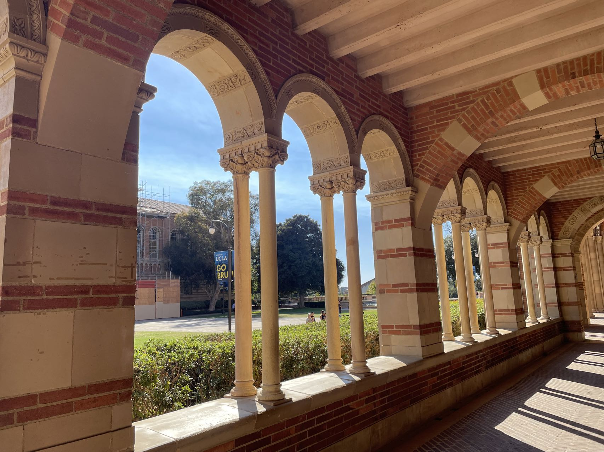
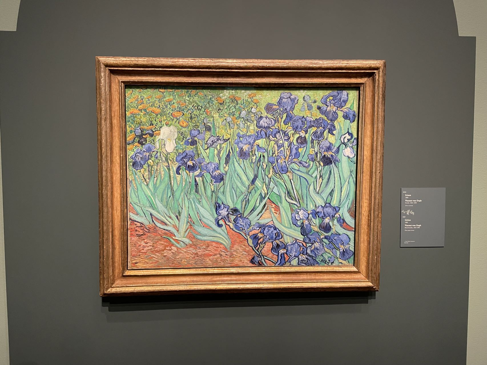
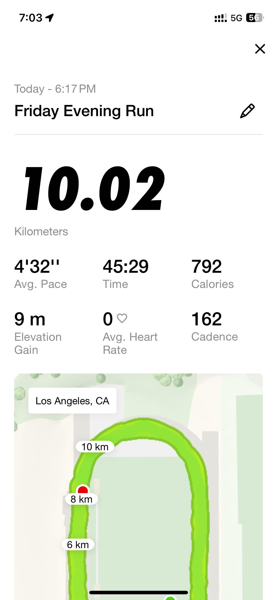